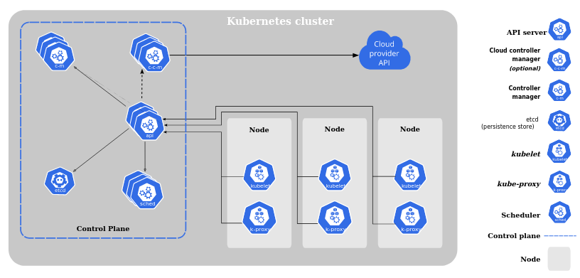

de Cero al Mero mero
Índice
Intro
¿De donde surge?
Google liberó el proyecto Kubernetes en el año 2014. Kubernetes se basa en la experiencia de Google corriendo aplicaciones en producción a gran escala por década y media, junto a las mejores ideas y prácticas de la comunidad.
Kubernetes es una plataforma portable y extensible de código abierto para administrar cargas de trabajo y servicios. Kubernetes facilita la automatización y la configuración declarativa.
Características
- Entorno de administración centrado en contenedores
- orquesta la infraestructura de cómputo, redes y almacenamiento
- Plataforma de microservicios
- Portable para la nube
- Hace más fácil el desplegar, escalar y administrar aplicaciones
Componentes de k8s
Cuando hablamos de Kubernetes, hablamos de un clúster de computadoras
Un clúster de Kubernetes consta de un conjunto de máquinas de trabajo, llamadas nodos, que ejecutan aplicaciones en contenedores. Cada clúster tiene al menos un nodo worker.
Los nodos workers alojan los pods que son los componentes que ejecutan los contenedores de las aplicaciones.
los nodos y pods son controlador por el plano de control (control plane)
Control Plane
Los componentes que forman el plano de control toman decisiones globales sobre el clúster (por ejemplo, la planificación) y detectan y responden a eventos del clúster. Normalmente corre en uno o varios nodos donde no corren pods del usuario.
- kube-apiserver: que expone la API de Kubernetes. recibe las peticiones y actualiza acordemente el estado en etcd
- etcd: Almacén de datos persistente, consistente y distribuido. Es utilizado para almacenar toda a la información del clúster.
- kube-scheduler: Asigna nuevos pods a nodos según requisitos de recursos, restricciones de hardware/software/políticas, afinidad y anti-afinidad, localización de datos dependientes, etc
- kube-controller-manager: Controla nodos, replicas de pods, conecta servicios con pods y maneja accesos
- cloud-controller-manager: controladores que interactúan con proveedores de la nube
Componenetes de los nodos
Además,corren en cada nodo corren otros componentes, manteniendo a los pods en funcionamiento y proporcionando el entorno de ejecución de Kubernetes
- kubelet: Se asegura de que los contenedores estén corriendo en un pod
- kube-proxy: Asegura las reglas de red en el host haciendo reenvío de conexiones
- runtime: Es el software que se encarga de correr los contenedores: Docker, containerd, cri-o
API de Kubernetes
La API de Kubernetes sirve como base para el esquema de configuración declarativa del sistema. La herramienta de línea de comandos kubectl puede ser usada para crear, actualizar, eliminar y consultar objetos a través de la API.
Para trabajar con los objetos de Kubernetes -- sea para crearlos, modificarlos, o borrarlos -- necesitarás usar la API de Kubernetes.
Para facilitar la eliminación de propiedades o reestructurar la representación de un recurso, Kubernetes soporta múltiples versiones de la API en distintas rutas como /api/v1 o /api/betav1
Objetos de Kubernetes
Los Objetos de Kubernetes son entidades persistentes dentro del sistema de Kubernetes. Kubernetes utiliza estas entidades para representar el estado de tu clúster. Específicamente, pueden describir:
- Qué aplicaciones corren en contenedores (y en qué nodos)
- Los recursos disponibles para dichas aplicaciones
- Las políticas acerca de cómo dichas aplicaciones se comportan, como las políticas de reinicio, actualización, y tolerancia a fallos
Cada objeto de K8s tendrá dos propiedades: spec y status.
- spec: Es definida por el usuario y contiene las características que se quiere que tenga el objeto
- status: Es manejador por el sistema de Kubernetes y describe el estado actual del objecto
el sistema de Kubernetes analiza constantemente la spec y el estado, en caso de haber diferencias lleva a cabo una correción
Archivos manifiesto YAML
En general los objetos son representados en archivos .yaml, los cuales tienen que tener estos campos obligatorios
- apiVersion: Qué versión de la API de Kubernetes estás usando para crear este objeto
- kind: Qué clase de objeto quieres crear
- metadata: Datos que permiten identificar unívocamente al objeto, incluyendo una cadena de texto para el name, UID, y opcionalmente el namespace
- spec: es diferente según el tipo de objeto de Kubernetes, y contiene campos anidados específicos de cada objeto
Para saber qué campos son posibles o requeridos para cada objeto revisa la Referencia de la API de Kubernetes
Gestión de objetos usando kubectl
La herramienta de línea de comandos kubectl admite varias formas diferentes de crear y administrar objetos de Kubernetes
- Comandos imperativos: en objectos existenetes y corriendo
- Configuración imperativa: Un solo archivo .yaml
- Configuración declarativa: un directorio con varios archivos .yaml
Instalación de herramientas para Kubernetes
kubectl & kind
kubectl
Kind
Sigue los pasos según tu sistema operativo: instala kind
Asegurate de tener instalado ambos programas:
kubectl version
kind --version
Crea un cluster local
kind create cluster
kubectl cluster-info --context kind-kind
kubectl CLI
Ejemplo: Crear un deployment de una imagen de nginx
kubectl create deployment nginx --image nginx
Verifica la creación de tu pod
kubectl get pods
Más información: Comandos imperativos
Configuración imperativa de objeto
En la configuración de objetos imperativo, el comando kubectl especifica la operación (crear, reemplazar, etc.), indicadores opcionales y al menos un nombre de archivo. El archivo especificado debe contener una definición completa del objeto en formato YAML o JSON después de la opcion -f (ruta local o url web)
crea el siguiente archivo: whoami-deploy.yml
apiVersion: apps/v1
kind: Deployment
metadata:
name: whoami-ingress-deployment
spec:
replicas: 2
selector:
matchLabels:
app: whoami-ingress
template:
metadata:
labels:
app: whoami-ingress
spec:
containers:
- image: ctmagazin/whoami
name: whoami-container
ports:
- containerPort: 80
resources:
requests:
cpu: 100m
memory: 90Mi
limits:
cpu: 200m
memory: 190Mi
kubectl create -f whoami-deploy.yml
kubectl create -f whoami-deploy.yml
kubectl get pods
Cambia el valor del campo replicas de 2 a 4 y corre este comando
kubectl apply -f whoami-deploy.yml
Configuración declarativa de objectos
Principales Objetos de k8s

Tipos
Infraesctructura
Cluster
- El clúster de Kubernetes consta de al menos un plano principal (de control) y una o más máquinas de trabajo, denominadas nodos, que ejecutan aplicaciones en contenedores
Control Plane
- También conocido como nodo maestro o nodo principal
- El plano de control administra los nodos trabajadores y los pods en el clúster
- El plano de control recibe información de una CLI o UI a través de una API. es decir, punto de entrada para REST/kubectl
- Los componentes del plano de control toman decisiones globales sobre el clúster, además de detectar y responder a los eventos del clúster
Node
- También conocido como nodo trabajador o nodo de cómputo
- Cada nodo contiene los servicios necesarios para ejecutar Pods (para ejecutar aplicaciones en contenedores), administrados por el plano de control
- El clúster de Kubernetes necesita al menos un nodo trabajador, pero normalmente tiene muchos
- Los pods están programados y orquestados para ejecutarse en nodos
- Puede ampliar y reducir el clúster agregando y eliminando nodos
Trabajo
Namespace
- Los namespaces proporcionan un mecanismo para aislar grupos de recursos dentro de un único clúster
- Los nombres de los recursos deben ser únicos dentro de un namespace, pero no entre namespaces
- El scope de un namespace solo se aplica a los objetos que se basan en ellos (p. ej. Deployments, Services, etc) y no a los objetos de clúster (p. ej.StorageClass, Nodes, PersistentVolumes, etc)
- Los namespaces permiten organizar los recursos en grupos que no se superponen (por ejemplo, por entorno, por proyecto, por equipo)
Pod
- Pod es la unidad de trabajo básica y la unidad informática implementable más pequeña que puede se puede crear y administrar en Kubernetes.
- Pod es un grupo de uno o más contenedores, con almacenamiento compartido y recursos de red, y una especificación sobre cómo ejecutar los contenedores.
Deployment / App API
- Un Deployment proporciona actualizaciones declarativas para Pods (Pods idénticos) y ReplicaSets.
- Un Deployment crea un objeto de administración un nivel más alto que un conjunto de réplicas y le permite implementar y administrar actualizaciones para pods en un clúster.
- Un Deployment maneja el ReplicaSet, que se crea automáticamente con un Deployment.
- Un Deployment es la forma más común de desplegar una aplicación en Kubernetes.
- Se describe un estado deseado en una implementación y el controlador de implementación cambia el estado real al estado deseado a una velocidad controlada.
- Un Deployment tiene detalles sobre cómo implementar (o retroceder) en las versiones de su aplicación.
Replicaset
- El propósito de un ReplicaSet es mantener un conjunto estable de pods de réplica (pods idénticos) ejecutándose en un momento dado.
- ReplicaSet garantiza que siempre se esté ejecutando una cantidad definida de pods.
- Kubernetes permite la autorreparación a través de ReplicaSets y Replication Controllers. El controlador de replicación ayuda a garantizar que un Pod se vuelva a crear automáticamente cuando la aplicación dentro del Pod falla.
- Por lo general, ReplicaSet no debe crearse directamente. Sin embargo, la implementación es un concepto de nivel superior que administra los conjuntos de réplicas y proporciona actualizaciones declarativas para los pods.
- Se recomienda usar Deployments en lugar de usar directamente ReplicaSets.
Statefulset
- StatefulSet se utiliza para administrar aplicaciones con estado con almacenamiento persistente.
- El almacenamiento permanece asociado con sus pods. Los volúmenes persisten cuando se eliminan los pods. Los pods se implementan/actualizan individualmente y en orden.
- StatefulSet ejecuta pods con estado con una identidad estable y brinda garantías sobre el orden y la singularidad de estos Pods. Los nombres de los pods se conservan cuando se reprograman (aplicacion-0, aplicacion-1).
- Al igual que un Deployment, un StatefulSet administra pods que se basan en una especificación de contenedor idéntica. La diferencia es que los StatefulSet mantienen una identidad fija para cada uno de sus pods.
- Los pods tienen nombres de DNS fijos, a diferencia de los Pods de Deployments.
- Los pods se crean a partir de la misma especificación, pero no son intercambiables.
- Cada Pod tiene su propio almacenamiento.
Daemonset
- DaemonSet garantiza que todos los nodos (o algunos, que coincidan con un selector de nodos) ejecuten una copia de un pod. A medida que se agregan nodos al clúster, se les agregan pods. A medida que se eliminan los nodos del clúster, esos pods se recolectan como elementos no utilizados. Eliminar un DaemonSet limpiará los Pods que creó.
- DaemonSet implementa una única instancia de un pod en todos los nodos de trabajo (o en un subconjunto filtrado de ellos).
- Se usa para ejecutar un demonio de almacenamiento de clúster en cada nodo.
- Se usa para ejecutar un demonio de recopilación de registros en cada nodo.
- Se usa para ejecutar un demonio de monitoreo de nodos en cada nodo.
Job
- Un Job ejecuta pods que realizan una tarea completable.
- Un Job crea uno o más Pods y continuará reintentando la ejecución de los Pods hasta que un número específico de ellos finalice con éxito.
- Eliminar un trabajo limpiará los pods que creó. La suspensión de un trabajo eliminará sus pods activos hasta que Un Job se reanude nuevamente.
Cronjob
- CronJob crea trabajos en un horario repetitivo.
- Un objeto CronJob es como una línea de un archivo crontab (tabla cron). Ejecuta un trabajo periódicamente en un horario determinado, escrito en formato Cron.
- Los CronJobs están destinados a realizar acciones regulares programadas, como copias de seguridad, generación de informes, etc.
Red
Service API
- El Service se utiliza para exponer una aplicación implementada con un conjunto de pods mediante un único punto de conexión. Es decir, asigna una dirección IP fija a un grupo lógico de pods.
- El Service proporciona redes estables para pods (pods efímeros) al brindar direcciones IP y nombres de DNS estables, y proporciona una forma para que Kubernetes configure un proxy para reenviar tráfico.
- El Service permite la comunicación entre nodos, pods y usuarios de la aplicación al clúster. El Service también proporciona balanceo de carga cuando tiene réplicas de Pod.
- Hay cuatro tipos de servicios de Kubernetes: ClusterIP, NodePort, LoadBalancer y ExternalName.
Ingress
- Ingress administra el acceso externo a los servicios en un clúster, generalmente HTTP/S.
- Ingress puede proporcionar balanceo de carga, terminación SSL y virtual hosting.
- Ingress expone uno o más servicios a clientes externos a través de una única dirección IP accesible externamente.
- El enrutamiento del tráfico está controlado por reglas definidas en el recurso Ingress.
- El controlador de ingreso es responsable de cumplir con el ingreso, generalmente con un balanceador de carga.
Network Policy
- La política de red aísla la red entre los pods especificando qué pods se pueden conectar entre sí y con otros puntos de la red.
- La política de red funciona en OSI Layer 3 y Layer 4.
- Las políticas de red son implementadas por el el plugin network
Endpoint
- Un Endpoint define qué pods (u otros servidores) están expuestos a través de un servicio.
- Para los Services de Kubernetes, Kubernetes crea un objeto Endpoint. Este punto final tendrá el mapeo de direcciones IP de los pods. Esto se crea automáticamente para los Services con un selector definido.
- Los Endpoints también se pueden usar para conectarse a servicios externos como si fueran internos del clúster de kubernetes.
Almacenamiento
Persistance Volume
- PV es una representación de bajo nivel de un volumen de almacenamiento. Es una abstracción del dispositivo de almacenamiento físico que se adjunta al clúster.
- PV se puede montar a un Pod a través de un PVC.
- PV es un recurso en el clúster que se puede aprovisionar dinámicamente mediante StorageClasses o que un administrador de clúster puede crear de forma explícita.
- PV es independiente del ciclo de vida de los Pods. Significa que los datos representados por un PV continúan existiendo a medida que cambia el clúster y se eliminan y recrean los pods.
Persistance Volume Claim
- Un PVC une un Pod con un PV. Un Pod solicitar el Volumen a través de la PVC.
- Un PVC es la solicitud para aprovisionar almacenamiento persistente con un tipo y una configuración específicos.
- Los PVC describen la capacidad de almacenamiento y las características que requiere un pod, y el clúster intenta provisiona el volumen persistente deseado.
- El PVC debe estar en el mismo namespace que el Pod. Para cada Pod, un PVC realiza una solicitud de consumo de almacenamiento dentro de un espacio de nombres.
- El PVC es similar a un Pod. Los pods consumen recursos de nodos y PVC consumen recursos de PV.
Storage Class
- StorageClass permite el provisionamiento dinámico de volúmenes persistentes, cuando PVC lo reclama.
- StorageClass abstrae al proveedor de almacenamiento subyacente (de la nube).
- StorageClass se usa junto con PVC para permitir que los pods soliciten dinámicamente un nuevo almacenamiento.
Configuración
Configmap
- ConfigMap se utiliza para almacenar datos no confidenciales en pares clave-valor.
- Los pods pueden consumir ConfigMaps como variables de entorno, argumentos de línea de comandos o como archivos de configuración en un volumen.
- ConfigMap le permite desacoplar la configuración específica de las imágenes de su contenedor, para que sus aplicaciones sean fácilmente portátiles.
Secret
- Los Secret son similares a ConfigMaps, pero están destinados específicamente a contener datos confidenciales.
- Secret le permite almacenar y administrar una pequeña cantidad de información confidencial, como contraseñas, tokens, claves, claves SSH, etc.
- Con los Secret, no es necesario incluir datos confidenciales en el código de la aplicación.
- Los Secret se pueden crear independientemente de los Pods que los usan.
Escalamiento
Horizontal Pod Autoscaling
- HPA actualiza automáticamente un recurso de carga de trabajo (como un Deployment o StatefulSet), con el objetivo de escalar o desescalar automáticamente la carga de trabajo para que coincida con la demanda.
- HPA escala automáticamente la cantidad de réplicas de pods según el uso de la CPU, memoría, tráfico u otra métrica.
- HPA controla el escalamiento de un Deployment y su ReplicaSet.
Pod Disruption Budget
- PDB limita la cantidad de Pods de una aplicación replicada que están inactivos simultáneamente debido a interrupciones voluntarias.
- PDB puede detener temporalmente el proceso de desalojo si la cantidad de réplicas de una aplicación cae por debajo del umbral declarado. El proceso de desalojo continuará una vez que la cantidad de réplicas disponibles supere el umbral.
- PDB define la cantidad mínima de pods que deben permanecer en ejecución al evacuar los nodos.
Seguridad
Service Account
- Kubernetes usa Service Accounts para autenticar y autorizar solicitudes de pods al servidor API de Kubernetes.
- Un Service Account proporciona una identidad para los procesos que se ejecutan en un pod.
Role
- El Role define lo que se puede hacer con los recursos de Kubernetes.
- El Role contiene una o más reglas que representan un conjunto de permisos.
- Roles funcionan solo dentro de las restricciones de un namespace.
- Después de crear un Role, lo asigna a un usuario o grupo de usuarios creando un RoleBinding.
Cluster Role
- ClusterRole funciona igual que Role, pero se aplican a todo el clúster.
- Los ClusterRoles no están vinculados a un namespace específico. ClusterRole otorga acceso a más de un namespace o a todos.
- Después de crear un ClusterRole, lo asigna a un usuario o grupo de usuarios creando un RoleBinding o ClusterRoleBinding.
- Los ClusterRoles se usan normalmente con Service Accounts.
Role Binding
- RoleBinding se utiliza para otorgar permiso a un Sujeto (usuario, grupo o Service Account).
- RoleBinding contiene una lista de sujetos y una referencia a la función que se otorga.
- Role y RoleBinding se utilizan denro de un namespace.
- Define quién puede realizar las acciones definidas en un Role o ClusterRole
Cluster Role Binding
- ClusterRole y ClusterRoleBinding funcionan como Role y RoleBinding, excepto que tienen un alcance más amplio.
- ClusterRoleBinding otorga acceso a todo el clúster y a múltiples namespaces
- ClusterRoleBinding vincula o asocia un ClusterRole con un Sujeto (usuario, grupo o Service Account).